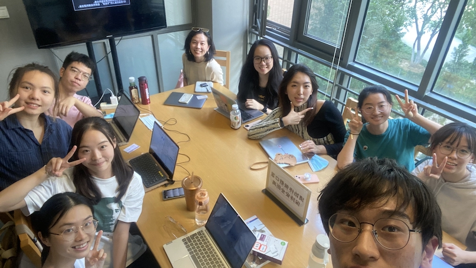

Political Science Research Lab
Research with computational methods.

The Political Science Research Lab, based in the School of International Relations and Diplomacy at Beijing Foreign Studies University, is committed to recruiting and serving underrepresented undergraduate and graduate students from a wide range of fields. At PSRL, we value mentorship and partnerships between faculty and students. Emphasizing a collaborative culture, PSRL members gain hands-on experience in learning and applying computational methods to research by working alongside faculty on cutting-edge projects. Apart from offering data science and other research skills training, PSRL also offers a series of professionalization workshops to help members survive and thrive beyond academia.
Annoucement
Now accepting applications from BFSU students for Fall 2022! To join us, please send your cv and a cover letter to The lab will be reviewing applications on a rolling basis.